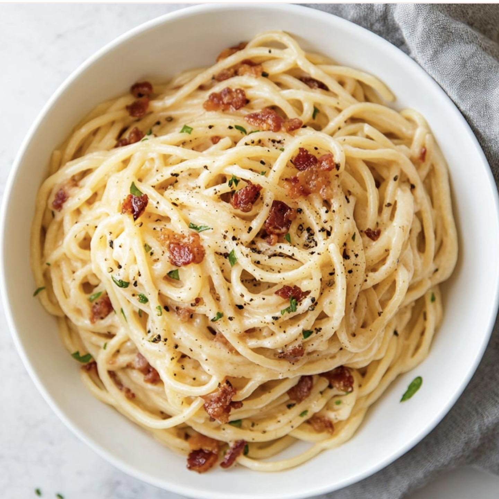

Creamy Pasta

Description
Pasta Nicole's mother used to make for here. It contains meat which is teribble and delicious.
Disclaimer: meat can be replaced by fake meat.
Ingredients
- 30 gram Grana Padano
- Klein bekertje slagroom
- 1 eigeel
- 1 limoen
- Bacon of nep baconstukjes
- Spagetti
Steps
- Kook de spagetti
- Bak de bacon
- Giet spagetti af
- Mix slagroom, Grana Padano, eigeel, limoensap en limoenschil in een bakje
- Voeg de mix met de bacon toe aan de spagetti in de pan en roer goed